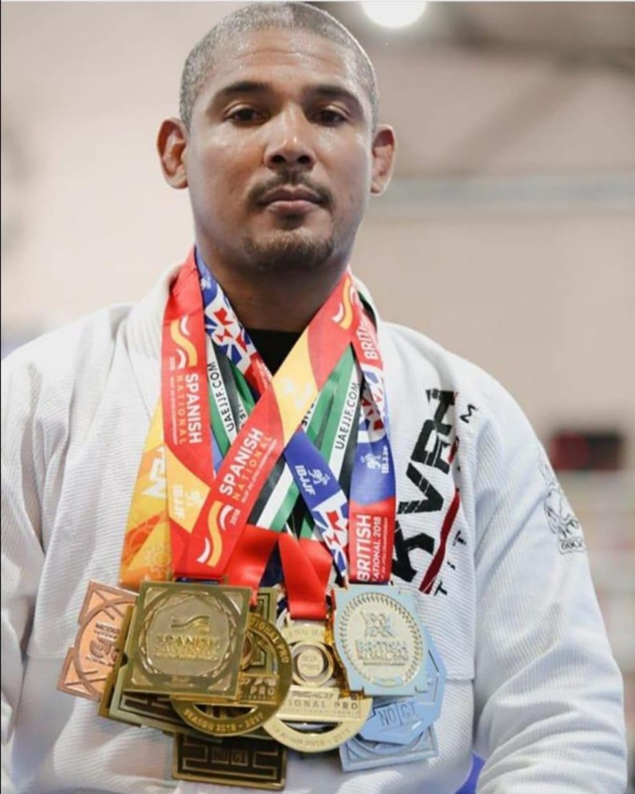
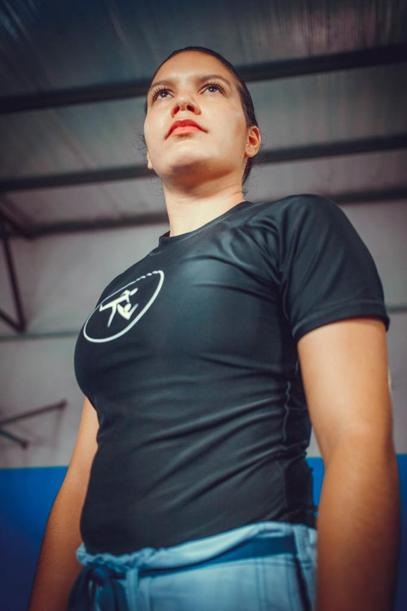

Evolution Sport Center
Caramba, como eu estava com saudades dessas palavrinhas aí de cima! Eu sei que dei uma bela de uma sumida e na real, provavelmente o ritmo do blog vá dar uma bela diminuída mesmo, mas é por um bom motivo! Hoje voltei especialmente para participar da Postagem Coletiva do Vai Um Café, já que meu post do mês passado sobre As Várias Versões de Mim foi o vencedor da votação de melhor do mês e me garantiu o direito de escolher o tema sobre o qual eu e vários outros blogueiros falaremos em abril. E como eu não sou boba nem nada, já logo tratei de escolher um tema que me permitisse também compartilhar aqui o giro de 180° que deu a minha vida desde que nós nos “vimos” pela última vez. Preparados? Então segura que lá vem surra de sinceridade!
Holl de professores
José Roberto
Caramba, como eu estava com saudades dessas palavrinhas aí de cima! Eu sei que dei uma bela de uma sumida e na real, provavelmente o ritmo do blog vá dar uma bela diminuída mesmo, mas é por um bom motivo!
Suelem Gomes Freitas
Caramba, como eu estava com saudades dessas palavrinhas aí de cima! Eu sei que dei uma bela de uma sumida e na real, provavelmente o ritmo do blog vá dar uma bela diminuída mesmo, mas é por um bom motivo!
Thomas Bryan
Caramba, como eu estava com saudades dessas palavrinhas aí de cima! Eu sei que dei uma bela de uma sumida e na real, provavelmente o ritmo do blog vá dar uma bela diminuída mesmo, mas é por um bom motivo!